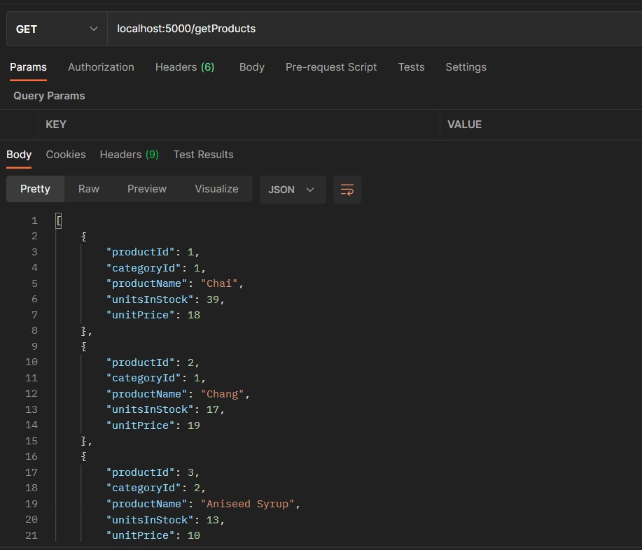
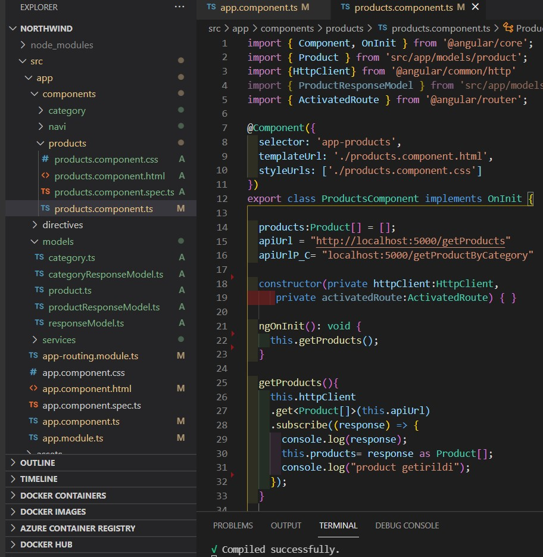
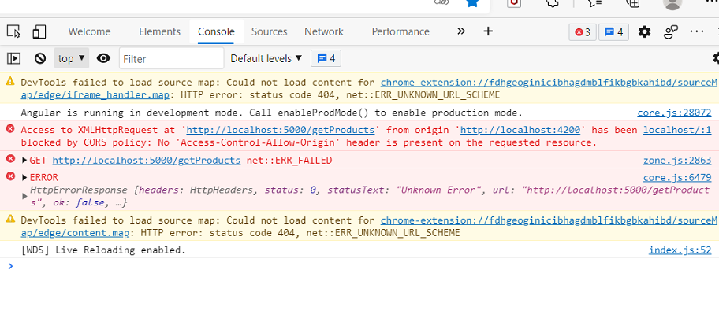
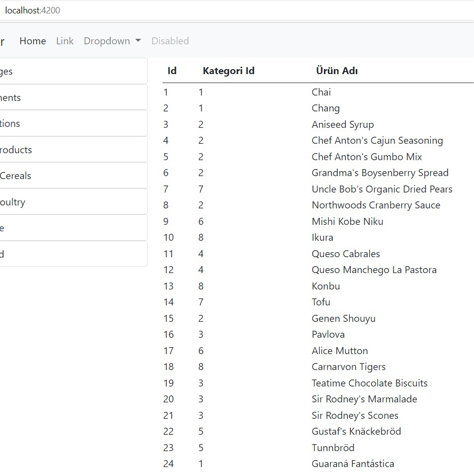

Angular Nedir
Angular, Google tarafından geliştirilen ve desteklenen SPA(Single Page Application) uygulama yapılmasına olanak sağlayan
javascript kütüphanesidir.
Web, mobil ve masaüstü uygulamalar oluşturmak için kullanılan Javascript tabanlı bir framework’dür. Angular uygulamaları
Javascript’in üzerine inşa edilmiş bir dil olan Typescript’in Html, Css ile birlikte kullanılmasını içerir.
SPA Nedir ? Single Page Application (SPA), her yeni sayfanın içeriğinin yeni bir HTML sayfaları yüklemek yerine Javascript’in mevcut
sayfadaki sadece değişen sayfaya ait DOM öğelerini değiştirerek dinamik olarak oluşturduğu tasarım yaklaşımıdır.
Angular JS Sağladığı Avantajlar Nelerdir?
- Açık kaynak kodlu bir Javascript framework olması.
- MCV tasarım kalıbı temel alındığından, kolay anlışılabilir olması.
- Nitelikler (direktifler) aracılığı ile dinamik içerikler oluşturur.
- Hızlı bir biçimde SPA uygulama geliştirilebilir.
- İhtiyacınız olan bütün paketler Angular içinde mevcut gelir
- Test Driven Development kavramına uygundur. Unit test yazmaya olanak sağlar.
Angular - Node.js
Northwind database'ine ait verileri alabilmek için api'ler yazıyoruz.
Product tablosundaki verilere ulaşabilmek için:
app.get('/getProducts', function (req, res) {
sql.connect(config, function (err) {
if (err) console.log(err);
var request = new sql.Request();
request.query('select productId, categoryId, productName, unitsInStock,unitPrice from Products', function (err, rs) {
if (err) console.log(err)
res.send(rs.recordset);
});
});
});
res.send(rs.recordset) : Postman'de recordset olarak yazılı olduğu için bu şekilde belirtiyoruz. Bu sayede Angular'da verilere ulaşabiliyoruz.

Şimdi Angular'da bağlantıyı sağlayalım.

apiUrl: postman'de verilere ulaştığımız url'dir.
Eğer bir api'den bir api'ye istek yapmaya çalıştığımızda hatada
CORS policy ifadesini görüyorsanız o backend'deki
apiye erişebilmeniz için gerekli konfigürasyon yapılmamış demektir.
cors: farklı bir yerden (origin'den) istek gelmesi. Yani Angular localhost:4200 da çalışırken localhost:5000 den istek geliyor.

Bu sorunu düzeltmek için:
Node.js deki server.js'e aşağıdaki kodu ekliyoruz.
app.use(function(req, res, next) {
res.header("Access-Control-Allow-Origin", "*"); // update to match the domain you will make the request from
res.header("Access-Control-Allow-Headers", "Origin, X-Requested-With, Content-Type, Accept");
next();
});
Artık Angular üzerinden Northwind database'ne ait Product verilere ulaşabilirsiniz.

Kodun tamamına ulaşmak isterseniz
github hesabıma bakabilirsiniz.